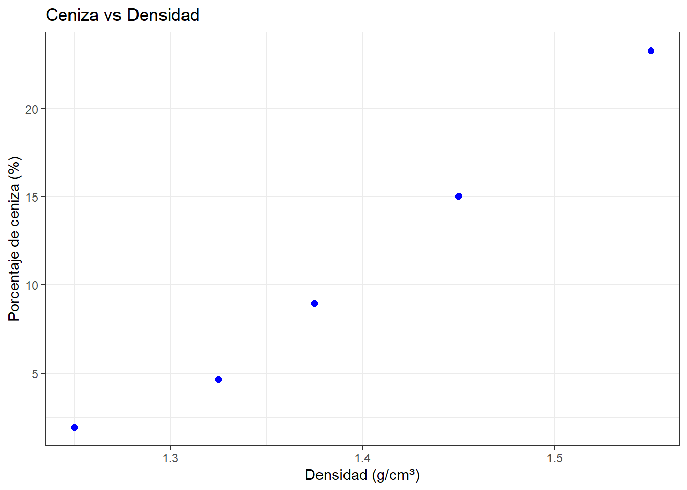

Ejercicios de Regresión Lineal
Octubre 2026
Chapter 1 Ejercicio 9 (Sec. 7.4)
Datos y a. Diagrama de dispersión:
df <- data.frame(
densidad = c(1.25, 1.325, 1.375, 1.45, 1.55),
ceniza = c(1.93, 4.63, 8.95, 15.05, 23.31)
)
ggplot(df, aes(x = densidad, y = ceniza)) +
geom_point(color = "blue", size = 2) +
theme_bw() +
labs(
title = "Ceniza vs Densidad",
x = "Densidad (g/cm³)",
y = "Porcentaje de ceniza (%)"
)
b. Recta de mínimos cuadrados:
## (Intercept) densidad
## -91.73883 73.75023c. Diferencia si la densidad difiere en 0.1:
## densidad
## 7.375023d. Pronóstico para 1.40:
## 1
## 11.5115e. Valores ajustados y f. Residuos:
## densidad ceniza ajustados residuos
## 1 1.250 1.93 0.4489671 1.4810329
## 2 1.325 4.63 5.9802347 -1.3502347
## 3 1.375 8.95 9.6677465 -0.7177465
## 4 1.450 15.05 15.1990141 -0.1490141
## 5 1.550 23.31 22.5740376 0.7359624## 1
## 1g. Correlación y h. Sumas de cuadrados:
## [1] 0.9913177anova_mod <- anova(mod)
SSR <- anova_mod$`Sum Sq`[1]
SSE <- anova_mod$`Sum Sq`[2]
SST <- SSR + SSE
c(SSR = SSR, SSE = SSE, SST = SST)## SSR SSE SST
## 289.631922 5.095598 294.727520i. Relación entre SSR/SST y correlación:
## [1] 0.9827108